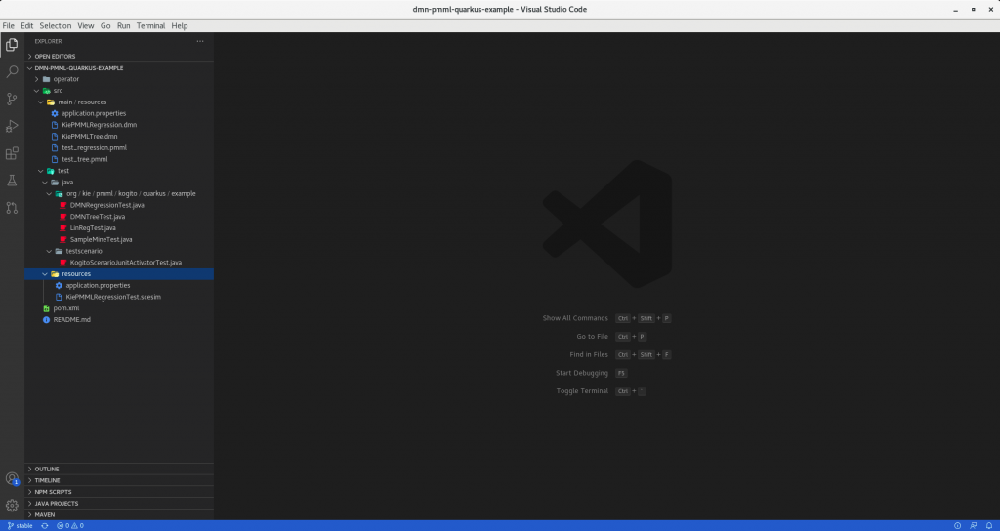
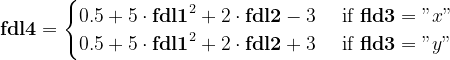
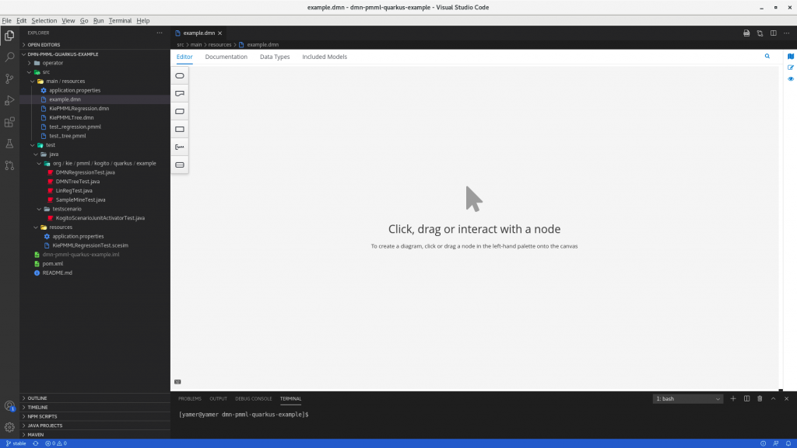
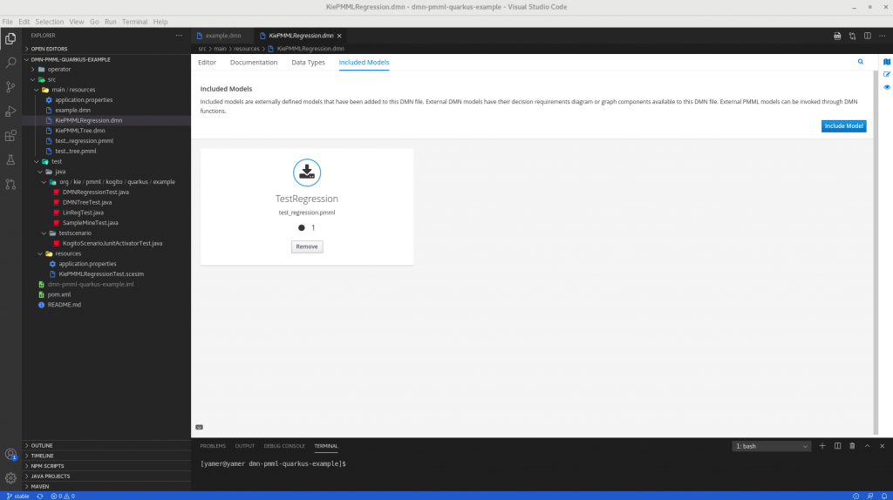
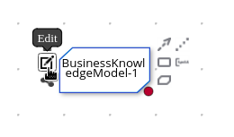
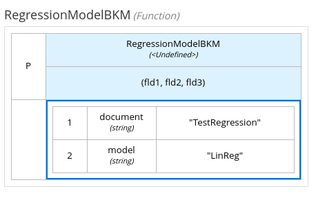
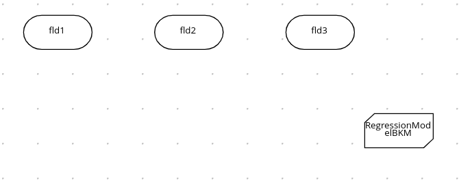
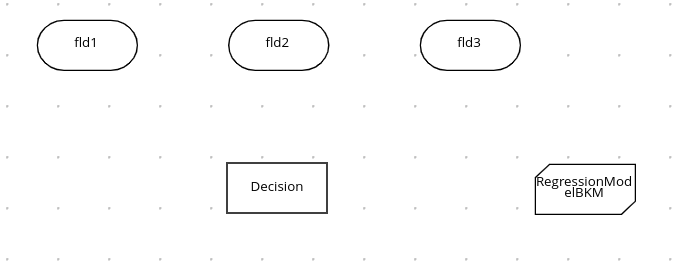
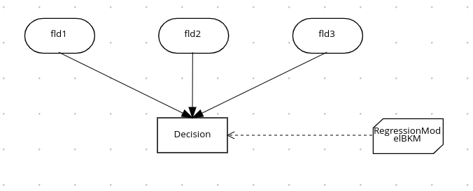
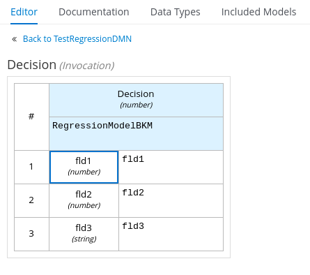

How to use PMML models in DMN Editor (VSCode)
Introduction
Since the 0.7.0 release, the Kogito DMN editor supports loading PMML models as part of a DMN model.
A PMML (Predictive Model Markup Language) model is an XML file that describes a predictive model generated by Data Mining or AI algorithms. You can learn more about on PMML on Data Mining Group – PMML page. Examples of handled models are Naive Bayes, Neural Network, Support Vector Machine, and others.Introducing these kinds of modules into DMN Editor enriches the logic and the algorithms a user can create to determine a decision process, opening a wide door to the Machine Learning / AI world.
Most likely, some of you already dealt with this feature in Business Central. In this case, it will be straightforward for you to migrate to DMN Editor VSCode plugin, which now offers it. For all other users, this article will provide a complete step-by-step tutorial presenting how to import and process a PMML model inside of the DMN Editor in VSCode.
Tutorial
Time to start the tutorial! We need:
- VSCode (1.46.0+);
- DMN Editor plugin (0.7.1+);
- Cloning kogito-examples repository, which contains the example;
After cloning kogito-examples repository, open your VSCode editor and open the directory kogito-examples/kogito-quarkus-examples/dmn-pmml-quarkus-example, which contains the covered example. As a result, you should see the project open in VSCode, as shown in the below screenshot

First file to analyze is "test_regression.pmml" located in kogito-examples/kogito-quarkus-examples/dmn-pmml-quarkus-example/src/main/resources directory, giving us the opportunity to learn more about this kind of file. The model refers to Regression Models families and more specifically to a Linear Regression model. This model’s typical application is to determine the relationship between the dependent variable and one or more independent variables. This formula describes the regression model present in "test_regression.pmml":

The aim is to design a DMN process that determines a decision exploiting PMML model output fdl4 (dependent variable) given its defined input variables fdl1, fdl2, and fdl3 (independent variables) using the above formula.
That is precisely the scope of the next file we will analyze: "KiePMMLRegression.dmn". Despite the file already contains the final DMN process design, listed below, you can find the steps to create the DMN Process using the editor:
- Create a new file with .dmn extension, under the same folder which contains test_regression.pmml
- Open the file, and you should see an empty DMN Editor, as shown below

- In the editor menu, go to Included Model items. Here, you can import the PMML model previously described, pressing the Include Model button. A popup will appear. Select “test_regression.pmml” file and assign a unique name of your choice (eg. TestRegression). Next screenshot shows what you should see if everything went correctly:

- Now, go back to the Editor menu item. Here, we need to define a node that will hold the previously imported PMML model. Select a DMN Business Knowledge Model from the editor’s left palette and drag it into the editor. Click the Edit icon to open the DMN boxed expression designer:

- A table will appear. Set the expression type to PMML click the top-left function cell. In the document and model rows in the table, double-click the undefined cells to specify the included PMML document (“TestRegression”) and the PMML model (“LinReg”). Input variables are automatically set.

- We are now ready to define the DMN Process, starting from the three required DMN Input Data to represent input values fdl1, fdl2 and fdl3.
Don’t forget to set them as numeric as Data type, selecting every node and opening the Properties card icon in the upper-right corner of the DMN designer.

- The next required step is to introduce a DMN Decision Node, which will combine the input nodes values with the PMML logic to determine the Decision result, as will be explained in the following steps. Set its data type as numeric as well.

- Time to link the nodes! Link input nodes fdl1, fdl2, and fdl3 with Decision node using Create DMN Information Requirement option, visible when selected a node. Link together RegressionModelBKM and Decision nodes using a Create DMN Knowledge Requirement instead. This describes the final graphical representation of the DMN process: Given inputs fdl1, fdl2, and fdl3, determine the Decision using the given PMML model.

- To finalize the DMN Process, we need to define the logic in the Decision node. Select it and press the Edit icon to open the DMN boxed expression designer. As expression type, choose “Invocation“. That indicates the Decision needs to invoke an external logic to determine the decision result. As a function, write “RegressionModelBKM” which represents the name of the Business Knowledge Model we previously defined to hold the PMML model. As parameters, add three rows to define the parameters – i.e. Inputs node of the decision, associating them with the variable name defined in the PMML logic. In this case, both input nodes and PMML model input variables share the same names, but this is not a strict rule.

This step concludes the tutorial. Design DMN process now fully integrate PMML model test_regression.pmml.
Our Plugin provides additional features useful to test the correctness of the designed logic of the DMN process. A future article will cover this topic, stay tuned!
Conclusion
With this article, we learned how to include a PMML model as a part of a DMN Model using DMN Editor VSCode plugin. The shown case can be easily extended to more complex DMN process and PMML models, better fitting your requirements. Of course, this requires a deeper knowledge of both DMN and PMML standards and their combined functionality. One resource strongly suggested to start this path is this article Knowledge meets machine learning for smarter decisions
Thank you for reading!